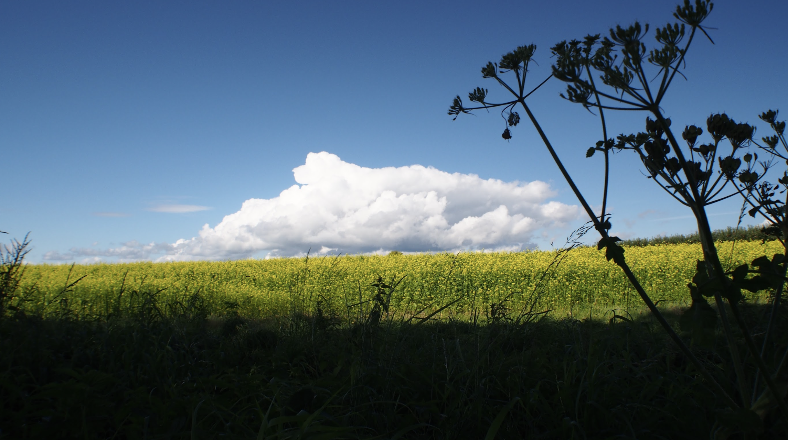

A Cloud Resting in Green Pastures 躺臥在青草地的雲
Posted on 23 August, 2025
我拍過一張至今仍讓我難忘的照片。幾年前的一個晴朗早晨，我走了二十多公里到鄰邦的一個小鎮。 途中經過廣闊的田野，忽然看見不遠處有一大片雲，靜靜地躺臥在青草地上。 周圍沒有任何遮蔽物，只有一片無邊的天地，與那朵彷彿近在眼前的雲。 那震撼的景象深深烙印在我心裡，我忍不住拿起相機將它記錄下來。
那之前，我一直以為雲應該屬於高空，必須抬頭仰望才能看見。但那天我才明白，改變的不是雲的位置，而是我的視角。 我以為「雲都在天上」就等於「必須抬頭去看」。事實上，雲永遠都在天空，但根據我們所處的位置，有時候它們會安靜地出現在我們面前，即使我們沒有爬上高山。 在國外生活的日子裡，我經歷過其他類似的瞬間或事件，它們就像那片低垂的雲，提醒我視角並不是固定不變的，只要願意去看，世界會展現不同的面貌：
我曾以為大學的價值與名聲緊緊相連。但在德國，我看見許多大學專心投入研究，不追逐名氣，卻一樣能做出深刻的貢獻，那是一種低調的專注。 我曾以為音樂會只屬於宏偉的音樂廳。但我參加過一些最動人的演出，卻是在普通的教堂，甚至是小小的博物館裡。音樂在那裡迴盪，帶來的不見得是華麗，而是文化的傳承與結晶。美並不需要富麗堂皇的舞台，只需要一個能被聽見的地方。 我曾以為「快速」與「安全」不能同時存在於道路上。然而在德國高速公路上，我體會到另一種可能：當大家都遵守規則、彼此體諒，車速可以極快，旅程卻仍然平靜而安穩。速度並不一定意味著危險，它也可以是一種信任。 我也曾以為直白的話語意味著缺乏友善。但後來我明白，許多德國人雖然說話直接，卻同時是既友善又有禮貌的人。他們的單純和坦誠帶著尊重，那是一種不同的溫暖。
就像那片曾經躺在青草地上的雲，這些經驗邀請我調整視角，重新去看、去理解。那趟旅程的終點，在小鎮裡我看見那片雲化作細雨，彷彿把其中的智慧與祝福傾倒而下。 也許雲的價值，不在於它高掛天際的壯麗，而是在它降卑成雨的時候，悄悄滋養了大地。 我走進一家小餐館，享用一桌簡單卻溫暖的筵席，生活的盼望就在那裡再度甦醒。我便期待著下一次出現的雲朵。

Years ago, I took a photo that still speaks to me today. It was on a clear morning, some years ago, when I walked more than twenty kilometers to a small town across the border. Along the way, I passed through wide open fields and suddenly saw, not far ahead, a great cloud resting quietly upon the grass. Nothing blocked the view, but only the vast expanse of earth and sky, and that cloud, so near that it seemed almost within reach. The sight struck me deeply, and I could not help but lift my camera to preserve the moment.
Until then, I had always thought clouds belonged high above, something you had to tilt your head back to see. But that day, I realized it wasn’t only the cloud that shifted. It was my perspective. I had assumed that “clouds are in the sky” meant you must always look up. The truth is, clouds will always be in the sky, but depending on where we stand, sometimes we can see them right in front of us without climbing up. Living abroad gave me many moments like that cloud. They reminded me that perspectives are not fixed; they expand when we allow ourselves to see differently.
I once thought that the value of a university was tied to its reputation. In Germany, I learned that a university can quietly devote itself to research, without the burden of chasing prestige. Reputation and performance are not the same—and that realization helped me appreciate dedication in new ways. I once thought that concerts could only belong in concert halls. Yet some of the most moving performances I have attended were held in simple churches, or even in small museums. There, the music resonated, not with splendor, but with the weight of heritage and the distillation of culture. Beauty does not require a lavish stage; it only needs a place where it can be heard. I once thought that “fast” and “safe” could not exist together on the road. But driving on German highways showed me otherwise. When people follow the rules and drive with consideration, cars can move at incredible speeds, and yet the ride feels calm and secure. Speed doesn’t always mean danger—it can also mean trust. I once thought direct words meant a lack of friendliness. But I came to see that some Germans, though direct in speech, are among the kindest and most polite people I’ve met. Their honesty carries respect—it is a different kind of warmth.
Like that cloud once lying upon the grass, these experiences invite me to shift my gaze, to see and to understand anew. At the journey’s end, in that little town, I watched the cloud dissolve into a gentle rain, as if pouring out its hidden wisdom and blessing. Perhaps the true worth of a cloud is not in its majesty high above, but in the quiet humility of descending as rain, to nourish the earth. I entered a small German bistro and had a simple, warm meal. And there, hope for life was restored once again within me. And ever since, I wait with quiet hope for the next cloud to come.